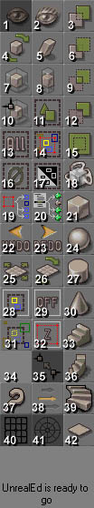

|  |
- Move camera
- Zoom camera
- Add brush to world
- Rotate brush
- Shear brush
- Subtract brush from world
- Scale brush
- Stretch brush
- Brush intersection
- Snapscale brush
- Select all polys
- Brush deintersection
- Select all actors
- Select actors inside brush
- Add special brush
- Select none
- Invert actor selection state
- Add movable brush
- Replace selected brushes
- Replace selected nonbrush actors
- Build a cube
- Undo last operation
- Redo last operation
- Build a sphere
- Pan textures
- Rotate textures
- Build a cylinder
- Drawing region: selected actors
- Drawing region: off
- Build a cone
- Hide selected actors
- Drawing region: brush Z(depth)
- Build a stair
- Nothing
- Toggle vertex snap
- Build spiral stair
- Get help
- Camera speed
- Build curved stair
- Toggle grid
- Toggle rotation grid
- Build a sheet
|